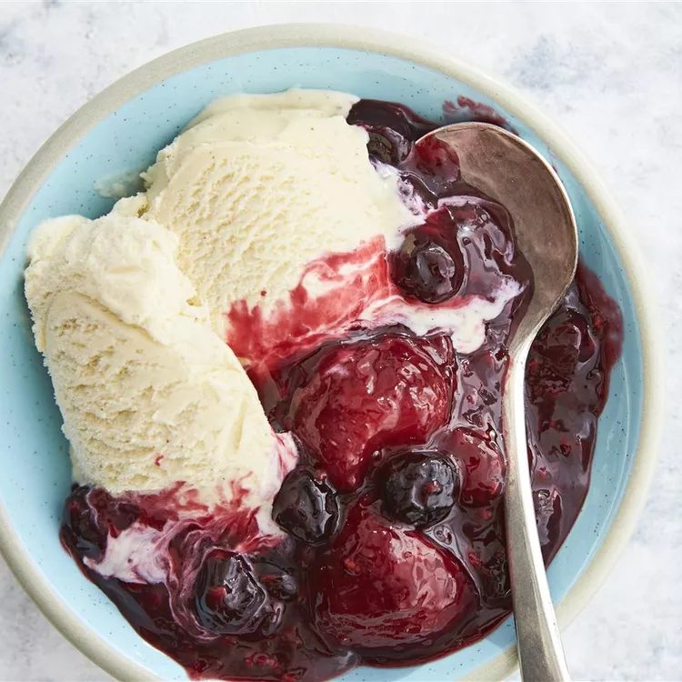

Warm Berry Compote

Description
A berry compote made in a slow cooker with frozen berries and orange juice. A great dessert by itself or over ice cream.
Ingredients
- 6 cups frozen mixed berries
- 1/2 cup white sugar
- 1/4 cup orange juice
- 1 1/2 teaspoons finely grated orange zest
- 2 tablespoons cornstarch
- 2 tablespoons water
Directions
- Stir frozen berries, sugar, orange juice, and orange zest together in a slow cooker. Cover and cook on High until bubbling, for about 1 1/2 hours.
- Stir cornstarch and water together in a cup until fully dissolved. Stir into berry mixture. Cover again and cook until thickened, about 5-10 minutes. Serve warm or at room temperature.